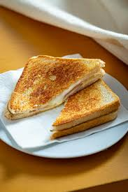

Odin Recipes
Grilled Cheese

Description
BA grilled cheese is a sandwich with two slices of
bread with sliced or grated cheese inside (usually
cheddar, Swiss, gruyere, havarti or Monterey Jack),
lightly buttered on the outside, then fried on the
stovetop in a frying pan, or an electric griddle, then
flipped and fried again to brown both sides.
Ingredients
- Slices of Bread
- Cheese of Preference
- Salted Butter
Steps
- Butter both sides of each bread
- Place the bread in a non-stick fry pan over mideium low heat
- Flip bread and add your preference of cheeses
- Place the other piece of bread on top and cook for 3 minutes or undeside is golden
- Flig and cook other side of grilled cheese until golden